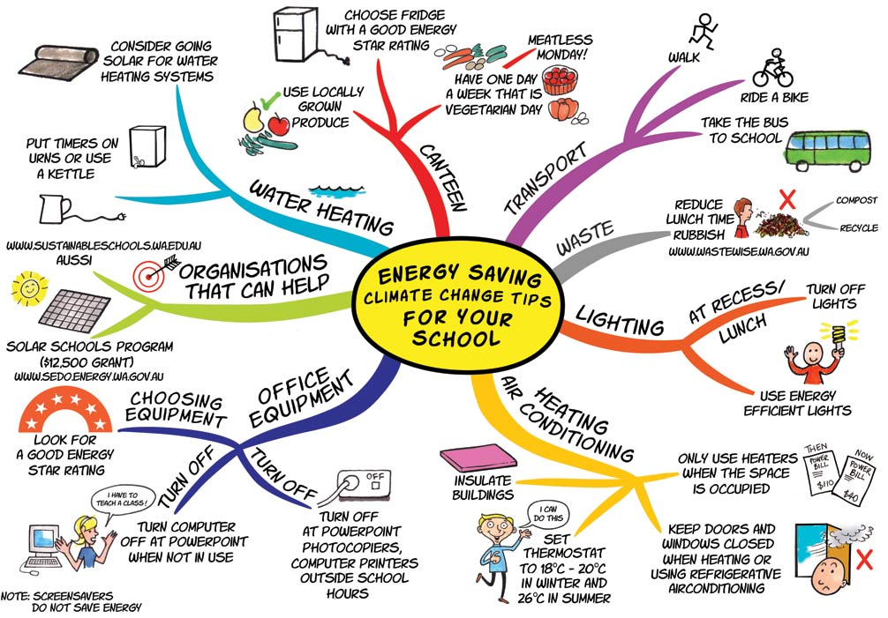

Energy Saving
Projects using renewable energy sources
UKRSOСPROJECT proposes to develop projects using renewable energy sources, which comply with the October 1, 2014 the Cabinet of Ministers of Ukraine National Action Plan for Renewable Energy in the period up to 2020.
- Such projects may include:
- construction of new boiler or reconstruction of obsolete boilers using gas, with the installation of solid fuel boilers, which are used as fuel pellets (pellets or briquettes) of wood, straw, wood or plant agricultural waste;
- installation or upgrade heating and cooling systems using heat pumps;
- installation or reconstruction of garjachego water using solar collectors;
- reconstruction or installation of electricity using solar panels;
- the construction of biogas plants to produce biogas;
- the use of co-generation plants using biogas.
- According to the disposition №902-r of October 1, 2014 the Cabinet of Ministers approved the National Action Plan for Renewable Energy in the period up to 2020, which provides for the involvement of investors and credit resources for its implementation, namely:
- funding for the development of electricity generation capacity based on wind energy, solar energy, the use of hydropower, geothermal energy, biomass use;
- funding for the development of heat-generating capacity, namely heating and cooling systems, through the use of solar energy, biomass (solid biomass or biogas, energy use of the environment through heat pumps (aerotermalnaya, geothermal, hydrothermal energy), the use of geothermal energy;
- funding for the development of the use of energy derived from renewable energy sources in the transport sector, namely, the use of electricity, the use of bio-ethanol and biodiesel.